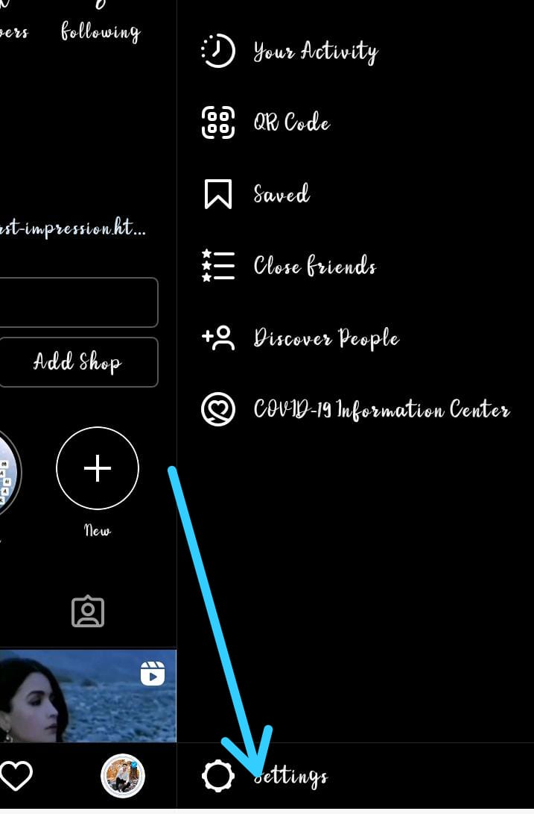
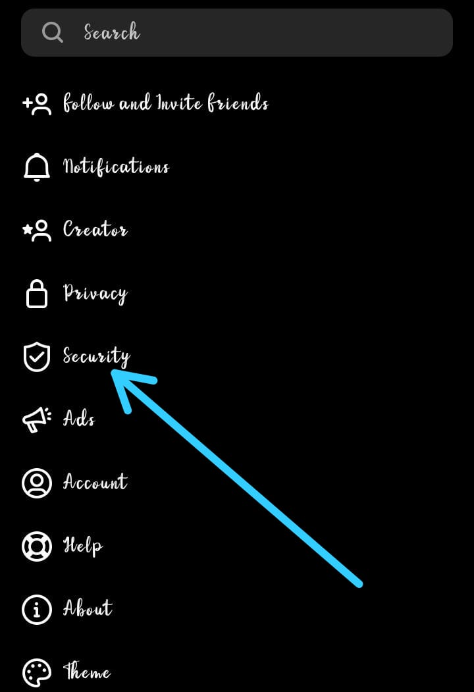

Here below given the step by methode to delete search history of instagram.
Step 1: Click on the id icon .
Step 2: Now click on tripple line (hameburger)
Step 3: Now go to setting option..
Step 4: Then click on security
Step 5: now get the option history go and click
now click on clear..